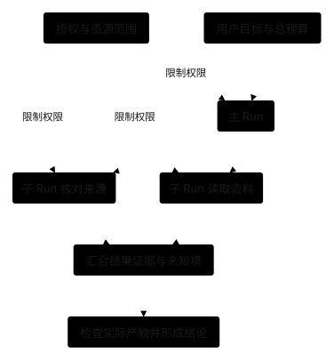

Orchestration：安排多个 Agent 分工与协作
1. 实现原理：为主任务、子任务和结果建立对应关系
报告任务可以由主 Agent 负责整体目标，将资料检索和证据检查交给不同执行者。调度层需要知道谁拥有任务、谁在运行、结果交给谁，以及最终由谁对用户负责。
多 Agent：任务、子任务运行与汇合
设计方案 · 当前仍是单 Agent 基线。

角色名可以帮助模型理解分工；程序仍需分别配置工具、运行 ID、预算、状态与权限。Context 隔离、文件修改隔离、操作系统隔离是三个不同问题。
2. 与相关模块怎样交互
编排层分配任务，各 Runner 执行任务。以“检索资料＋核对来源”为例，编排层为子任务指定输入快照、完成条件、预算与允许能力；子 Runner 使用各自的 Context，经 Model、Tools 和 Policy 完成实际调用。角色名称不会自动创建独立上下文或隔离工作区。

State 保存父子任务的对应关系、消息和结果；编排层核对证据后汇合，必要时将产物交给 Quality 检查。子任务超时、部分完成和已确认取消应分别报告；父任务超时不能证明子工具已经停止。只有明确协议才能决定重试、继续等待或报告未解决项。
初始化时选择执行者、工具与权限范围，运行时才传递任务和消息；子任务授权不得超出父任务允许范围。任务隔离、文件隔离与系统级隔离需要分别落实，不能靠多写几个角色提示词实现。
3. 有哪些编排方案
这些方案比较的层面不同：A、B 侧重任务与交互责任，C 侧重控制流，D 侧重持续通信，E 侧重领取与调度。可按需要组合，不能把它们理解为必经升级路线。当前均未实现，阶段 3 仍是单 Runner。
A. Agent 作为工具
主 Agent 提交一个边界明确的子任务，子 Agent 使用独立 Context 与受限工具，返回结构化结果，主 Agent 继续负责整合和回答。
实现时定义输入快照、任务要求、返回证据和错误；同步版本可以先限制深度为一层。它适合检索、分析和独立评审，代价是额外调用与交接遗漏。子 Agent 声称完成仍需核对结果。
B. Handoff 转移交互责任
当前 Agent 把这段交互交给另一专家，后者继续与用户工作，可能不返回原 Agent。它适合专业路由和明确的责任切换。
实现需要决定转交哪些历史、当前任务和授权，下一次用户输入也要路由到正确执行者。它与“主 Agent 调用助手再继续”不同，不能只复用同一个子任务调用接口而不明确由谁负责当前交互。
C. 显式 Graph 与并行汇合
程序定义分类、分支、节点与合并策略；节点可以是普通函数，也可以是 Agent。独立任务可以并行执行，汇合时核对版本并处理失败。
它适合业务阶段稳定、依赖清晰的任务。代价是状态合并、节点版本和恢复；多数投票不能自动证明答案正确，评审角色也可能共享相同盲点。
D. 持续子会话与邮箱
子 Agent 保留自己的 ID 和状态，后续可接收任务、澄清和更正。消息应有发送者、接收者、序号、任务归属与是否需要唤醒模型的类型。
它适合持续沟通，代价是乱序、重复、过期消息、取消和回收。普通进度通知不应必然触发新的模型请求，否则容易产生空转和互相回复的循环。
E. 共享任务板与队列
执行者领取满足依赖的任务，持有租约，提交结果后更新状态。需要记录任务版本，确保一个任务不会被同时领取，并处理超时和重新分配。
它适合大量可独立处理的任务和后台扩容，代价是调度与资源冲突。它主要解决任务分配，不自动定义内容质量或 Agent 之间如何理解对方的结果。
| 方案 | 谁负责最终结果 | 需要保存的关键状态 | 主要代价 |
|---|---|---|---|
| Agent 作为工具 | 主 Agent | 子任务、输入快照和结果 | 交接与整合 |
| Handoff | 接手的执行者 | 交互归属和转交信息 | 路由与权限迁移 |
| Graph | 应用工作流 | 节点、边和合并状态 | 状态与恢复维护 |
| 邮箱 | 按任务约定 | Agent ID、消息序号和等待条件 | 去重、唤醒和生命周期 |
| 任务板 | 调度器和任务拥有者 | 租约、版本和依赖 | 竞争、重复派发和冲突 |
这些方案能组合，但也各自适合不同需求。持续邮箱不是每个同步子任务都必须升级到的形态。
4. 真实实现怎样分工
OpenAI Agents SDK，官方文档。 编排与 Handoff 明确区分 Manager 调用 Agent 工具和转移交互责任。可以借鉴的是先明确谁负责当前任务，再选择调用方式。
Deep Agents，源码核对。 subagents.py 为普通子任务构建任务输入，将结果转换为主过程的工具结果；fork 另有历史继承路径。可借鉴的是显式定义子任务继承哪些输入、返回哪些结果，不把所有子 Agent 都视为全新窗口或全部共享历史。
Claude Code，官方文档。 子 Agent 说明描述独立窗口、工具范围和结果返回，普通子任务与继承父 Agent 的历史的 fork 不同。它说明了探索过程隔离的价值，同时也提醒子任务有自己的请求成本。
AgentScope Java，指定版本的官方文档。 子 Agent 设计区分工作区模式、同步等待和后台任务；特定同步等待超时可以转成后台继续。可借鉴的是将“等待超时”“取消执行”和“任务失败”分别定义。目录层面的 ISOLATED 也不能自行证明操作系统访问隔离。
LangGraph，官方文档。 Graph API 用状态、节点和边表达工作流，并通过 reducer 定义状态更新。可借鉴的是让合并规则进入程序，而不是只把多个模型答案拼接在一起。
5. 子任务契约怎样设计
建议输入包含目标、验收要求、资料引用与版本、允许工具和预算；输出包含发现、证据位置、产物 ID 或路径、实际检查和未解决问题。不要默认复制所有父 Agent 的历史，也不要把没有共享的重要要求留给子 Agent 猜测。
task = {id, parent_run_id, revision, objective, constraints, input_refs}
limits = {deadline, model_calls, token_budget, max_depth}
result = {status, findings, evidence_refs, artifact_refs, checks, uncertainties}
程序只允许子任务执行父任务权限与子任务配置都允许的操作；子任务不能因为拥有不同角色而扩大授权。所有调用和摘要用量计入总预算，委派开始前可以预留额度，防止并行执行者各自使用完整上限。
取消需要传播并等待执行端确认。父调用超时不等于子任务已停止，HTTP 断开也不等于后台资源已释放；结果未知时保留实际状态，不能补造失败回执。
6. 共享工作区怎样处理
只读任务可以使用同一固定快照；独立写入可按资源划分，必要时加版本检查或锁。代码修改可以用独立 Git worktree，再在汇合时合并和测试。
Worktree 隔离 Git 文件修改，不限制拥有主机权限的进程访问其他目录。最终验收应在合并后的产物上运行，而不是把各分支单独通过视为整体通过。除了 Git 能发现的文件冲突，还要检查合并后的代码逻辑是否仍然一致。
7. 外部调度与长时间等待
Cron 触发周期任务，Webhook 响应外部变化，持久工作流保存等待与后续步骤。它们管理外层任务，内部仍可运行同一 Agent Loop。
长时间等待时保存外部任务 ID、条件和截止时间，再释放 Worker；事件到达后去重、检查任务版本并唤醒。调度器还应处理重叠、并发和重试。没有变化的事件不必不断调用模型，真正的状态变化才需要进入决策。
8. 本项目当前选择与未实现范围
截至阶段 2：单 Agent、单 Runner。每次调用独立处理一个用户任务，没有跨任务会话，也没有子任务工具、Handoff、Graph、邮箱、共享队列或父子任务预算机制。
选择单循环是为了先验证工具、权限、记录与上下文的职责，见阶段 3。如果后续遇到明确的独立子任务，可按阶段 6 的编排方向约定输入、预算、证据与汇合，再和单 Agent 比较收益；下方练习只是一个可选的起步方案。
9. 后续练习：委派一次范围明确的只读任务
增加一个只读 review_document 子 Agent 工具，使用真实模型检查固定文档快照，返回问题、证据位置和不确定项。主 Agent 检查引用再整合，子任务不再创建子任务，也没有写权限。
分别检查输入缺少必要信息、子任务超时、结果重复和父任务取消；最后对同一任务集比较单 Agent 与委派版本。只有收益和新增成本都可解释，才继续增加异步通信和共享任务调度。